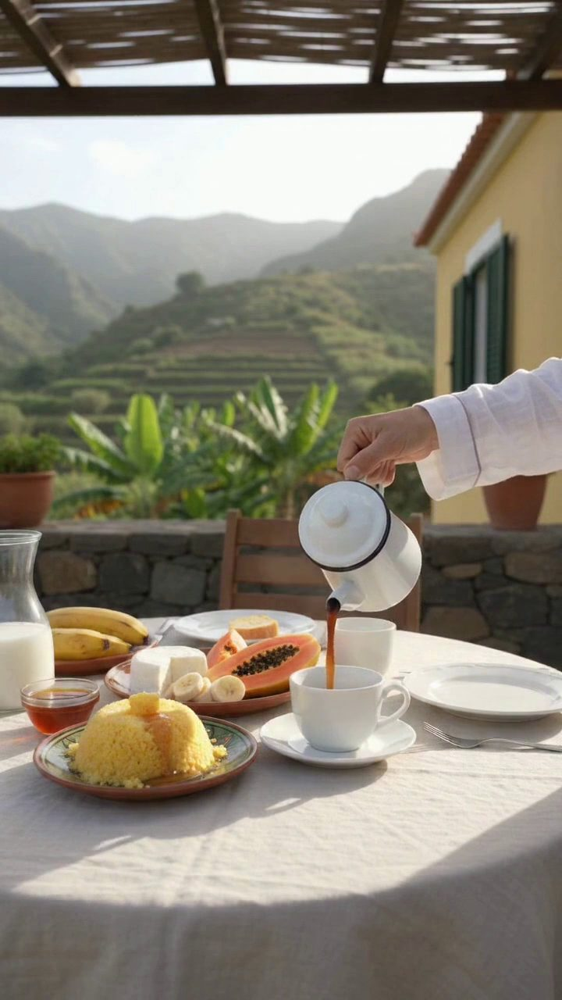
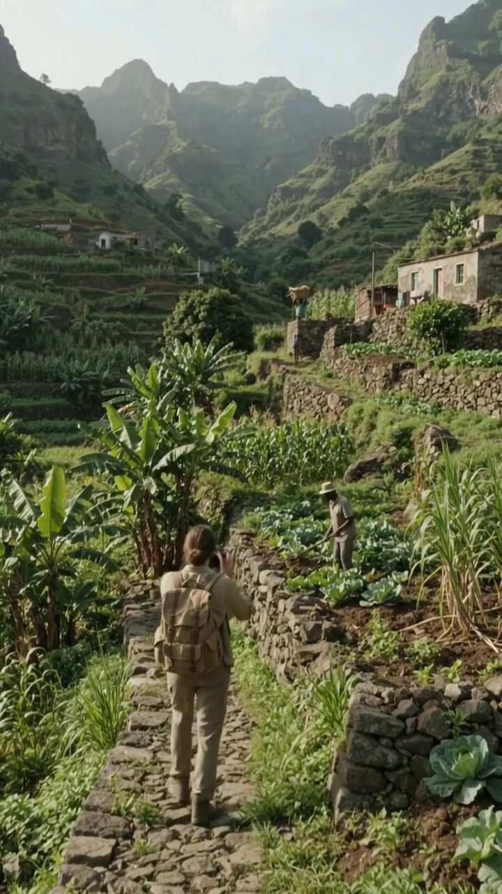
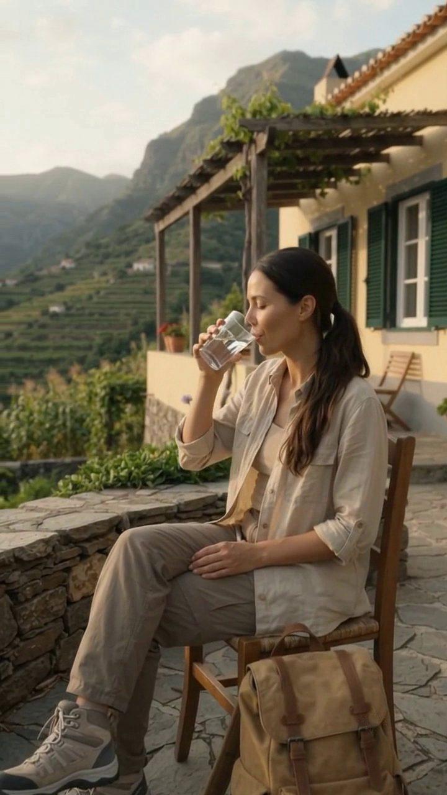
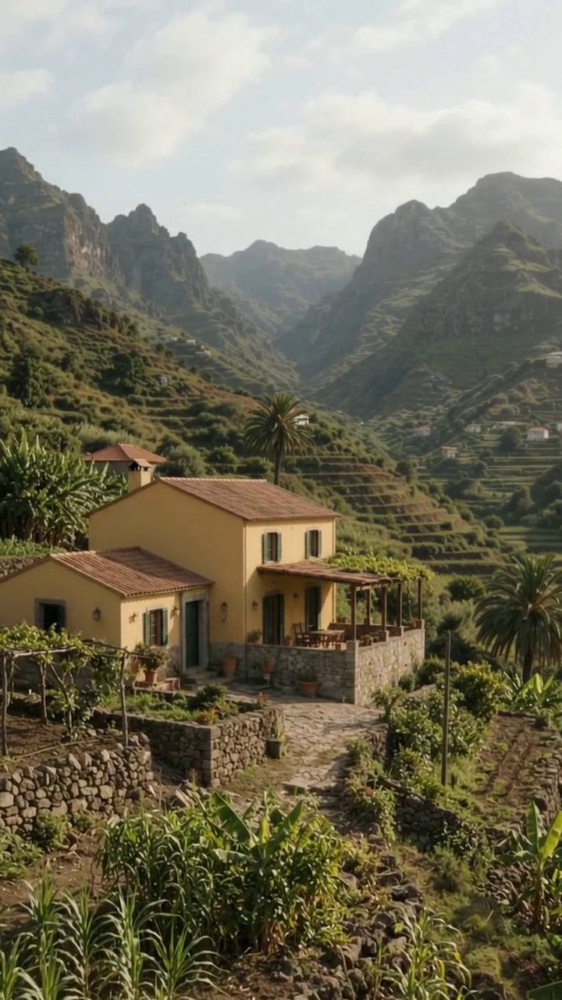
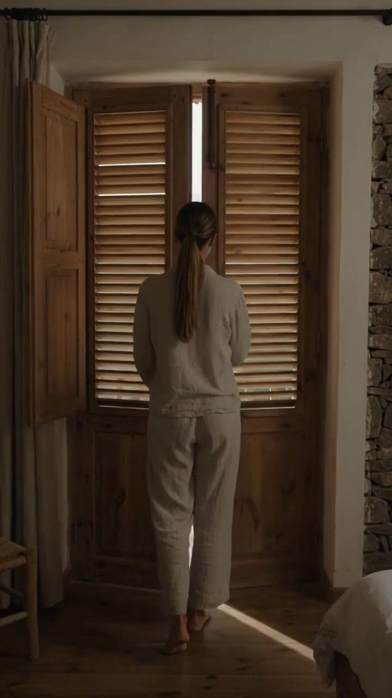
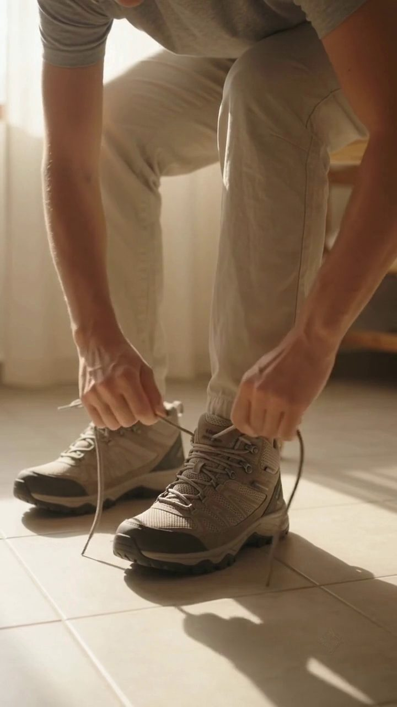
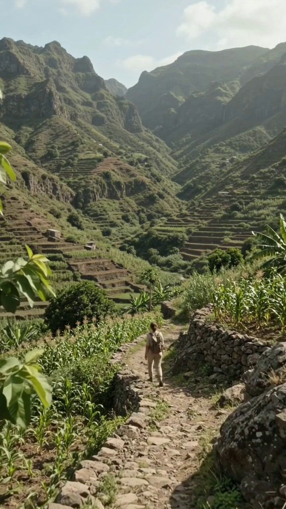
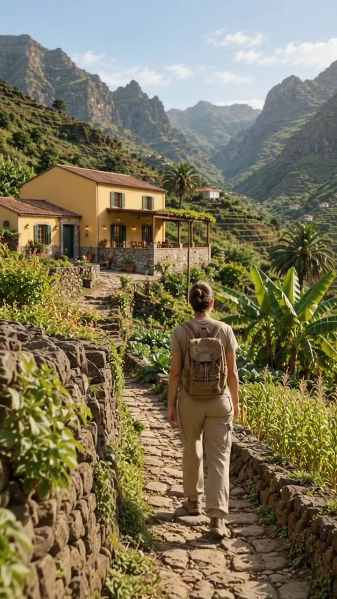
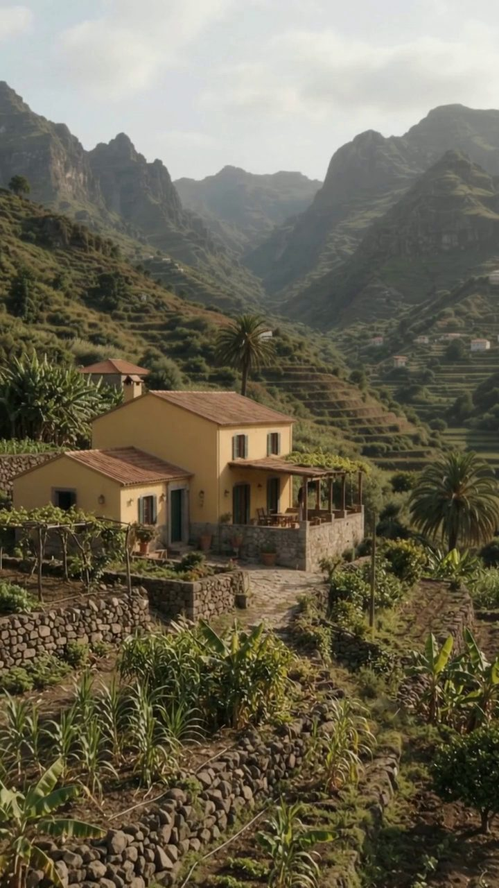

Strategic focus
Connect the property’s existing services into a single guest journey that a prospective visitor can follow from arrival to rest.
Independent Creative Case Study · Santo Antão, Cape Verde
Hospitality communication and a guest-journey film for a rural guesthouse in the Paul Valley.
Independent work by Timas Motion. Not commissioned by or officially affiliated with Casa Cavoquinho.
01 — The Challenge
Casa Cavoquinho’s published information already covers the practical side of a stay: valley-facing accommodation, breakfast and dinner, hiking information and access to the Paul Valley.
This study does not assess the property’s current communication or suggest that it is underperforming. It explores how those existing elements could be connected into a clearer guest journey, so that a prospective visitor understands both what the property offers and what a stay there could feel like.
How can a rural guesthouse be presented not simply as accommodation in the valley, but as a base for experiencing the valley itself?
Connect the property’s existing services into a single guest journey that a prospective visitor can follow from arrival to rest.
Guest-journey strategy, creative direction, a nine-moment production structure and a 36-second vertical film.
Published property information and public visual references to the valley. Generated scenes are labelled as interpretation, and no commercial results are claimed.
02 — The Insight
Accommodation, meals, hiking and rest are usually presented as separate items. Read in order, they describe a single day: the guest wakes at the house, goes out into the valley and returns to the same base.
That sequence became the structure of the communication.
03 — The Strategy
Turn the property’s existing experiences into a clear guest journey that helps prospective visitors picture Casa Cavoquinho as their base in the Paul Valley.
A base from which guests can experience the valley, return to comfort and remain connected to the place throughout their stay.
The property is the base. The valley is the experience. The guest connects the two.
Narrative structure
wake → prepare → explore → return → rest
Casa Valley Casa
04 — The Big Idea
“Stay” links the line directly to hospitality. “Rhythm” describes the pace of the experience: waking in the valley, moving through it, returning and slowing down.
In this approach the valley is treated as the rhythm of the stay, not only as its setting.
05 — Creative Direction
Guiding principle: the viewer should feel a day in the Paul Valley rather than watch a promotion of it.



Closer, calmer framing centred on people.
Wider landscapes and movement through the valley.
Closer framing again as the day slows down.
AI supports the cinematic interpretation. Published information and public visual references guide the creative decisions.
06 — Research & Reality Framework
The project was informed by Casa Cavoquinho’s published information and by public visual references to the Paul Valley. Creative direction worked within those limits.
The generated house, room, breakfast setup and guest scenes are conceptual interpretations. They are not documentary records and should not be read as a guarantee of the property’s exact architecture, interiors, food presentation or guest experience.
Booking growth, occupancy changes, revenue impact, client approval or commercial performance.
These sources ground the property and valley context above. They do not authenticate the film’s generated scenes.
Property context in Paul Valley, valley-view rooms, included breakfast, dinner using local and garden products, vegetarian food and information for planning hikes, as described by the property.
The stay’s connection to hiking; breakfast with Santo Antão coffee, local goat cheese, homemade jams and tropical fruit; and dinner after hiking. The property also describes reducing single-use plastic, purified-water refills, composting and greywater reuse for irrigation.
A Tentative List entry describing mountainous terrain, deep valleys, agricultural terraces, irrigation, local paths and the relationship between settlement and agriculture. It informs the broader landscape context; it is not evidence of inscription as a UNESCO World Heritage Site.
Location in Chã de Manuel dos Santos, Cabo de Ribeira, Paúl; rural accommodation within the protected Cova/Paúl/Ribeira da Torre area; and the restaurant, terrace, garden and valley setting.
AI-assisted conceptual imagery is used throughout; the film is not documentary photography or a literal record of the property.
The generated house, room, breakfast setup, protagonist and individual compositions are conceptual interpretations. The sources above do not establish that they literally represent Casa Cavoquinho or guarantee its exact architecture, interiors, food presentation or guest experience.
Publicly available landscape and destination references were used to study the visual character of the Paul Valley, including its steep topography, cultivated slopes, vegetation patterns, rural pathways and the relationship between buildings and the surrounding terrain.
These references informed the environmental direction of the project. They were used as visual research and contextual guidance, not as documentary evidence that the AI-generated locations reproduce Casa Cavoquinho or any specific site exactly.
Visual research sources:
Cabo Verde Tentative List entry. Paul Valley landscape context.
Paul Valley and Casa Cavoquinho destination context.
07 — The Production
The film was planned as a continuous sequence rather than a collection of separate hospitality shots. Each moment had to earn its place in the journey.

01Morning Presence
02Wake / First Contact
04Preparation to Leave
05Into the Valley
07The Return
09Closing / The Promise08 — The Edit
calm → preparation → exploration → return → rest
The opening is restrained, the central section carries more movement and the ending slows again. Sound and music maintain continuity between interior and exterior spaces and across the stages of the day.
The film closes on the campaign line: Stay in the Rhythm of the Valley.
09 — The Final Film
A 36-second hospitality film built around one complete guest journey: wake, explore, return, rest.
36 seconds · Vertical 9:16 · 720 × 1280
10 — The Outcome
This independent study brings together a guest-journey strategy, a creative direction, a nine-moment production structure and a 36-second film, all built from public research. The outcome is the creative work and its process; no commercial results are claimed.
Produced
A 36-second vertical film following one complete day at the property and in the valley.
Documented
Objective, core promise, big idea and creative principles, as presented in this case.
Documented
The public sources used, what they informed and the limits of the interpretation.